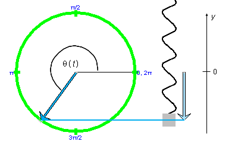
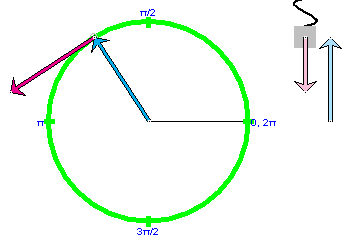
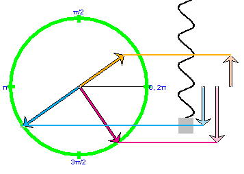
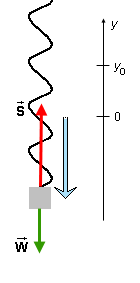
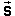
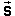

Prerequisites
Students should be familiar with the concepts of position, velocity, and acceleration, at the vector level and in uniform circular motion, and have a working knowledge of the sine and cosine functions for angles of any size. They should be familiar with the radian measure of angles and Newton's second law of motion.
Learning Outcomes
Students will learn that simple harmonic motion is projected uniform circular motion and will be able to use this understanding to make a quantitative analysis of displacement, velocity, and acceleration in simple harmonic motion.
Instructions
Students should know how the applet functions, as described in Help and ShowMe.
The applet should be open. The step-by-step instructions in the following text are to be done in the applet. You may need to toggle back and forth between instructions and applet if your screen space is limited.
 Overview and Definition of
Simple Harmonic Motion
Overview and Definition of
Simple Harmonic Motion
 Circular Motion and Position
vs. Time in SHM
Circular Motion and Position
vs. Time in SHM
 Circular Motion and Velocity
vs. Time in SHM
Circular Motion and Velocity
vs. Time in SHM
 Circular Motion and
Acceleration vs. Time in SHM
Circular Motion and
Acceleration vs. Time in SHM
 Appendix
Appendix
 Angles: Radian vs. Degree
Measure
Angles: Radian vs. Degree
Measure
Starting from the definition of simple harmonic motion (SHM), the Lesson will investigate the kinematical properties of SHM, in particular, the relationship between amplitude and period and the dependence of position, velocity, and acceleration on time. It will turn out that the acceleration and the position are related simply to each other. This relationship implies that a weighted spring obeying Hooke's Law will perform SHM. This is the system simulated in the applet.
Definition. Simple harmonic motion is a motion identical to the projection of a uniform circular motion onto a straight line.The straight line can have any orientation, e.g., vertical or horizontal.

An example of a system that performs SHM is a weighted spring. This is the system simulated in the applet. (It is assumed that the spring obeys Hooke's law.) The reason that weighted springs behave like this will be explained at the end of the Lesson.
In this section you will investigate how the period of a weighted oscillating spring depends on the amplitude of the motion. The result you will find is characteristic of all SHM.
RESET  the applet.
the applet.
Keep the default settings of the spring constant, k = 80 N/m, and mass of the suspended weight, m = 1.25 kg, but change the amplitude A to 0.10 m.
Display
The weight's position y is measured on a y-axis that points vertically upward and has its origin y = 0 at the weight's equilibrium point, as illustrated in Figure 1 below. The weight's position y is also its displacement from the equilibrium point. The Data box displays both the time t elapsed and the position y(t).
Task 1. Measure the period T of oscillation of the weighted spring. The period is the time interval over which the motion repeats itself.
To measure the period, run the motion until it completes one entire cycle. You can determine the point at which the motion starts to repeat itself either by watching the graph or watching the printout of y(t) in the Data box. The cycle repeats itself at the point where y(t) = 0 coming from negative values of y. You may want to approach this point by stepping into it after having run the motion to some point that is fairly close.
Result. The experimental value you should find for T is close to 0.78 s.
The theoretical value can be obtained from the following two equations
w =  (k/m)
(k/m)  (1)
(1)
w = 2p/T.  (2)
(2)
These equations will be derived later on. For the moment, you are free to use them. The variable w is called angular frequency. The letter w is the Greek letter "omega".
Task 2. Use Equations (1) and (2) and the given settings to calculate the period T of the oscillation. Compare the result to what you found "experimentally".
Task 3. Repeat Tasks 1 and 2 with an amplitude setting A = 0.30 m. What is your conclusion about the relationship between amplitude and period? You may want to verify your conclusion by repeating Tasks 1 and 2 with a third value for the amplitude.
Comment. The fact that the period does not depend on the amplitude is a characteristic feature of SHM. This feature may seem quite surprising. One might have expected the period to increase with the amplitude. However, the independence of the period on the amplitude is a natural consequence of SHM understood as projected uniform circular motion. SHM as projected uniform circular motion is dealt with in the next section.
RESET the applet.
Display the reference circle and the position vector of the reference point along with its vertical component vector. Note that the vertical component vector is also the position vector of the weight, measured from the weight's equilibrium position at y = 0. Initially, when the weight is at the equilibrium point, the component vector is zero and represented by just a dot, but you will see it being non-zero when you carry out Exercise 1.
Exercise 1. Run the motion. Observe
Display the horizontal line connecting the tips of the two vectors and the center of the weight to better exhibit the correlation between the three points. See Figure 1 below.
In your Notebook, describe the motion of the weight while the reference point makes one complete revolution.
Exercise 2. REWIND the applet, PLAY the motion, and PAUSE it in a position near that shown in Figure 1 below. Display the Data box and move it out of the way of the other elements in the applet window.

Figure 1
The reference point moves uniformly on the reference circle with a constant angular velocity w. When the angular velocity of a moving point is constant, its value is defined as the ratio
w = Dq
/ Dt  (3)
(3)
where Dq is a change in the angular position of the moving point and Dt the corresponding time elapsed.
Use Equation (3) together with appropriate data from the Data box to obtain a value for the angular velocity of the reference point. Compare it with the value of w shown in the Data box.
Exercise 2. The angular velocity w of the revolving reference point is equal to the angular frequency w of the weight's oscillatory motion defined by Equation (2) above. This is why we can use the same symbol w for both quantities.
The angular frequency of the weighted spring can be calculated from the spring constant k and the mass m by using Equation (1) above. Use this equation to calculate w from the settings on the applet, and compare the result with the value of w from Exercise 1.
Task 1. Prove in general that the angular velocity of the revolving reference point is equal to the angular frequency of the weight's oscillatory motion. To do so, start from Equation (3) for the angular velocity of the revolving reference point and show that this angular velocity is equal to the angular frequency of the oscillating weight as given by Equation (2).
Answer. When the revolving point makes one revolution, the oscillating weight goes through one cycle of its oscillation. The time required for this cycle is called the period and is denoted by T. The time T is also the time required for the reference point to complete one revolution. The change in angular position of the reference point during one revolution is equal to 2p rad. Therefore, by Equation (1), the revolving point's angular velocity is equal to 2p/T, which is equal to the angular frequency in Equation (2). Note that the unit "rad" is dimensionless and does not need to be indicated.
Task 2. Write down an expression for the weight's position y(t) at time t in terms of the phase angle q(t) and the radius A of the reference circle.
See Figure 1 for an illustration of the phase angle.
You will need a trigonometric function, defined for arbitrary angles. For a definition of the sine and cosine functions, see Sine and Cosine Functions in the Appendix to this Lesson.
Answer. The weight's y-coordinate is identical with that of the reference point. If the reference circle had radius 1, the definition of the sine function would imply y(t) = sin q(t). Since the radius is not 1, but A, we have to multiply this expression for y(t) by A. Thus,
y(t) = A sin q(t) .  (4)
(4)
Note that Equation (4) implies that the maximum value of y is A, because the maximum value of the sine function is 1. The maximum displacement from equilibrium of an oscillatory motion is called the amplitude of the motion. Thus, the amplitude of the weight's motion is equal to the radius A of the reference circle.
Exercise 3. Use Equation (4) to calculate the value of the weight's displacement y at the time t when you stopped the motion. Take the value of q(t) displayed in the Data box and the value of the amplitude from the Amplitude slider. Compare your answer with that displayed in the Data box.
Exercise 4. REWIND the applet. Don't change the settings of k and m. PLAY the motion, and PAUSE it. Using the value of the time elapsed t shown in the Data box and the value of the angular velocity determined in Exercise 2, calculate the value of the angle q(t). Compare your result with the value shown in the Data box.
Hint: Enter the given data into the definition of angular velocity given by Equation (3) and solve for t.
Task 3. Derive a general expression for the angle q(t) in terms of the angular velocity and the time t, assuming the motion starts with q(0) = 0.
Answer. Equation (3) written out in detail says
w = [q(t) - q(0)] / (t - 0).  (5)
(5)
Substituting the initial condition, this simplifies to
w = [q(t) - 0] / t.  (6)
(6)
Solving for q(t) gives
q(t) = wt .  (7)
(7)
Comment 1. The answer to Exercise 3 is obtained by substituting the values for w and t on the right-hand side of Equation (7).
Comment 2. Equation (7) is analogous to the equation for the distance s traveled during an elapsed time t for a motion of constant speed v,
s = vt.  (8)
(8)
Exercise 5. Combine Equations (4) and (7) to obtain a general equation for the displacement y of the weight from equilibrium at time t in terms of the angular velocity w and the time t, assuming the weight is at the equilibrium point y = 0 at time t = 0.
Answer. Substituting Expression (7) into Equation (4) gives
y(t) = A sin wt .  (9)
(9)
Exercise 6. REWIND the applet. Don't change the settings of k and m. PLAY the motion, and pause it. Using the value of the time elapsed t shown in the Data box and the value of the angular velocity determined in Exercise 2, calculate the value of the weight's displacement y(t). Compare your result with the value shown in the Data box.
Task 4. The value of w used so far is 8.00 rad/s. Substitute this value into Equation (9) and determine the period of the weight's oscillation from the resulting equation, using the periodicity of the sine function.
Answer. When w = 8.00 rad/s is substituted into Equation (9), one gets
y(t) = A sin 8t . (10)
(10)
It is not customary to include the unit "rad" in equations, and the unit will not be indicated either in the following with values of angles.
At t = 0, we have y = 0. At t = T, we should again have y = 0 and y and the sine function should have gone through one cycle. Since the period of the sine function is 2p, y will have gone through one cycle when the argument of the sine function is 2p. Thus,
8T = 2p  (11)
(11)
T = 2p/8 = p/4 s.  (12)
(12)
This works out to T = 0.785 s. Display the position vs. time graph, let the motion run through one period and observe that the y vs. t curve repeats itself starting at t = T = p/4 s. This works out to T = 0.785 s. You can confirm this value also by looking at the value of t in the Data box at the moment the motion reaches y = 0 coming from negative y-values.
Task 5. Repeat Task 4, but without substituting a specific value for w. Thus, derive a general expression for the period T of the weight's oscillatory motion in terms of the angular velocity w of the revolving reference point.
Answer. The argument wt in Equation (9) must be equal to 2p when t = T. Thus,
wT = 2p  (13)
(13)
T = 2p / w.  (14)
(14)
Comment 1. Expression (14) for the period is independent of the amplitude. Thus, we have derived the general property of all SHM that the amplitude does not affect the period of the motion. See the preceding section "Amplitude and Period in SHM".
Comment 2. Equation (14) is the same as Equation (2) for the angular frequency, except solved for T this time.
Exercise 7. REWIND the applet. Don't change the settings of k and m. Drag the reference point to a non-zero phase angle d = p/6, so that the motion will start at q(0) = p/6. PLAY the motion, and PAUSE it.
Using the value of the time elapsed t shown in the Data box, the value of the phase d, and the value of the angular velocity determined in Exercise 2, calculate the value of the angle q(t). Compare your result with the value shown in the Data box.
Task 6. Repeat Exercise 7, but this time use only symbols. I.e., assume that the motion has the initial condition q(0) = d and proceeds with a constant angular velocity w until time t. Develop an expression for q(t) in terms of d, w, and t.
Answer. The derivation is a generalization of that in Task 3. Again we start from Equation (5) and substitute the initial condition. This yields
w = [q(t) - d] /
t.  (15)
(15)
Solving for q(t) gives
q(t) = wt + d .
 (16)
(16)
Comment 1. The answer to Exercise 7 is obtained by substituting values for all three quantities on the right-hand side of Equation (16).
Comment 2. Equation (16) is easy to understand. d is the value of q at t = 0. The additional term wt is the increment in q during the time interval from t = 0 to time t.
Task 7. Derive a generalization of Expression (9) for the displacement y(t) of the weight from equilibrium if the phase d is not zero.
Hint: Compare Exercise 5.
Answer. Substitute Expression (16) for q(t) into Equation (4). This gives the answer
y(t) = A sin (wt + d) .
 (17)
(17)
Comment. Equation (17) gives the most general expression for the displacement from equilibrium as a function of time in SHM.
RESET the applet.
Exercise 1. Display the reference circle and the position and velocity-at-particle vectors. PLAY the motion, and PAUSE it. If you pause it when the reference point is in the second quadrant, you will get a picture like that in Figure 2 below. Ignore the two vertical component vectors for the moment.

Figure 2
The magenta arrow represents the velocity vector of the reference point. In your Notebook, describe the orientation of the velocity vector.
Exercise 2. Display the velocity-at-origin vector, in addition to the velocity-at-particle vector. You should find a second velocity vector displayed, identical to the one that has its tail end at the reference point. The new one has its tail end fixed at the center of the circle.
Continue the motion, and observe that the two velocity vectors are identical with each other at any instant. (The location does not matter; vectors can be drawn anywhere.) Uncheck the "velocity at particle" checkbox in the vector panel so that only the velocity vector attached to the circle's center remains. If you stop the motion in the second Quadrant, you will see something like what is shown in Figure 3 below. Ignore the vertical component vectors for the time being.

Figure 3
Describe the orientation of the velocity vector relative to that of the position vector. In particular, describe how the angle between the velocity vector and the "East" direction, the direction from the center of the circle towards q = 0, compares to the direction angle for the position vector.
Task 1. Based on your observation in Exercise 2, write down an equation for the weight's velocity vy(t) analogous to Equation (4) for y(t).
Hint. The tip of the velocity vector moves in a circle of radius v where v is the vector's magnitude.
Note. In Figure 2 the position and velocity vectors are represented by arrows of the same length. This has no particular significance. These two vectors "live" in different spaces, position space and velocity space, respectively, and the scales used to represent the magnitudes A and v of these vectors are not related. For different values of the angular velocity you will find that the magnitude of the velocity vector is different and unequal to A.
Answer. As Figure 2 illustrates, the velocity vector of the reference point is 90o = p/2 rad ahead of the position vector for this point. This is true at any instant. Both vectors turn in unison locked together, with the direction angle of the velocity vector 90o greater than that of the position vector.
Expressed in the form of an equation, this means that the direction angle qvel(t) of the velocity vector is related to the direction angle q(t) of the position vector by
qvel(t) =
q(t) + p/2 . (18)
(18)
Replacing q(t) in Equation (4) by qvel(t) and replacing A by v gives the answer
vy(t) = v sin [q(t) + p/2]
= v cos q(t). (19)
(19)
In the last step the identity
sin (q + p/2) = cos q (20)
(20)
has been used.
Exercise 3. Write down the analogue of Equation (9) for the velocity vy of the oscillating weight.
Answer. Substituting q(t) = wt from Equation (7) into Equation (19) gives the answer:
vy(t) = v sin (wt + p/2) =
v cos wt. (21)
(21)
Exercise 4. REWIND the applet. Display the velocity vs. time graph. Reset this graph in the graph panel so that you start with a clean pair of axes. PLAY the motion, and observe as the velocity vs. time graph (21) is being drawn. It should be a cosine function starting with its maximum value at t = 0.
In your Notebook, describe at which points of the weight's motion the weight's velocity vy has a maximum, a minimum, or is equal to zero. Indicate what the displacements of the weight are at these points. Demonstrate that Equation (21) is consistent with your answers.
You may find it useful to exhibit the velocity component vector that is attached to the moving weight by checking the "vel 2" checkbox and unchecking the "vel 1" checkbox. You need to select the Component toggle button to display the component. This component is the pink vector shown in Figure 2 above.
Exercise 5. Generalize Equation (21) to the case in which the motion has a non-zero phase d.
Answer. In the case of y(t), the generalization to non-zero phase amounted to changing Equation (9) into Equation (17). Analogously, for the velocity, we need to replace Equation (21) by
vy(t) = v cos (wt + d). (22)
(22)
Task 2. Express the magnitude v of the speed of the revolving point in terms of the amplitude A and the angular frequency w of the weight's motion.
Substitute the resulting expression into Equation (22) to obtain y(t) in terms of quantities directly related to the weight's motion. (The speed v is not related directly to the weight's motion. It is related directly to the motion of the reference point.)
Answer. Let c denote the circumference of the reference circle. Applying the expression for the circumference of a circle in terms of its radius gives
c = 2pA
. (23)
(23)
Dividing both sides of this equation by the period T gives
c /T = v = A (2p/T) = A w . (24)
(24)
In the last step, Equation (2) has been used which was proved earlier.
Substituting Expression (24) for v into Equation (22) gives
vy(t) = A w cos (wt + d). (25)
(25)
Comment. Equation (25) is the most general expression for the velocity vy(t) in SHM.
Exercise 6. Verify Equation (25) as follows. Click Replay. Set the phase to some non-zero value, play the motion, and pause it at some time t. Substitute the appropriate values on the right-hand side of Equation (25), calculate vy(t), and compare the result with the value for ay(t) displayed in the Data box.
The most general equation for the acceleration ay(t) in SHM that corresponds to Equation (17) for the displacement y(t) and Equation (25) for the velocity vy(t) in SHM is
ay(t) = - A w2 sin (wt + d). (26)
(26)
Exercise 1. Verify Equation (26) as follows. REWIND the applet. Set the phase to some non-zero value, play the motion, and pause it at some time t. Substitute the appropriate values on the right-hand side of Equation (26), calculate vy(t), and compare the result with the value for ay(t) displayed in the Data box.
You may also want to look at the graph of ay vs. t and check if it is consistent with Equation (26).
Task 1. Develop Equation (26) following steps analogous to those leading to Equation (17) for vy(t).
Hints.
Uncheck "acceleration at particle" in the vector panel, and check "acceleration at origin" instead. Now the acceleration vector is shown with its tail end at the center of the circle. This is the way it is displayed in Figure 4 below, along with the position and velocity vectors. The acceleration vector is in orange. The corresponding vertical component vectors, which are the displacement, velocity, and acceleration vectors of the oscillating weight, are shown as well.

Figure 4
Comment. Just as the velocity vector is 90o ahead of the position vector, so is the acceleration vector another 90o ahead of the velocity vector.
Substituting Expression (24) for v gives for the magnitude of the acceleration the expression
a = Aw2 . (27)
(27)
Comment. Note the progression of magnitudes: A for the position vector, Aw for the velocity vector, and Aw2 for the acceleration vector.
Exercise 2. In your Notebook, describe the weight's acceleration in relation to the weight's displacement. In particular, discuss the acceleration when the weight is at the top, when it is on its way down before reaching the equilibrium point, when it is going through the equilibrium point, when it continues on its way down past the equilbrium point, when it is at its lowest point, and again all the way to the top.
Task 2. Derive an equation that relates the weight's acceleration ay to the weight's displacement y.
Answer. Compare Equations (26) and (17). The only difference between the two right-hand sides is an extra factor of -w2 on the right-hand side of Equation (27). Therefore,
ay = - w2y .  (28)
(28)
Equation (28) is characteristic of SHM. Whenever a motion satisfies this equation, it is SHM. Since the acceleration is related to the net force acting on the oscillator, Equation (28) implies a relationship between the net force and the displacement. This will be the topic of the next and final section.
In the preceding sections the kinematical properties of SHM were developed from the definition of SHM as projected uniform circular motion. This is basically a mathematical exercise. Physics deals with the behaviour of real systems. So, are there any real systems that perform SHM? How do we find them? The applet pretends that a weighted spring performs SHM. How do we know that this is true? These questions will be answered in this section.
To answer these questions we need to consider the dynamics, i.e., the forces that give rise to SHM, and then look for systems in which these forces are present.
Question. Equation (28) is characteristic of SHM. It relates the acceleration in SHM to the displacement from equilibrium. Acceleration is related to net force, according to Newton's second law of motion. How must the net force acting on an object be related to the object's displacement from equilibrium if the object is to perform SHM?
Answer. Multiplying both sides of Equation (28) by the mass m of the object gives the equation
may = - mw2y .  (29)
(29)
The left-hand side of this equation is equal to the net force Fy acting on the object. Thus, Equation (29) implies that the net force must be related to the displacement y from equilibrium as follows:
Fy = - mw2y .  (30)
(30)
Equation (30) says that in SHM the net force must be proportional and opposite to the displacement.
Comment. The notation Fy indicates that we are dealing with the y-component of the net force, not with the magnitude F of the force. Fy, like y and ay can be both positive and negative. F cannot be negative.
Question. Does the net force exerted on a weight of mass m suspended from a spring satisfy Equation (30)?
Answer. YES, if the spring obeys Hooke's Law. However, a bit of a proof is required since two forces are acting on the weight, not only the spring force. The second force is the gravitational force, which is constant and not proportional to the displacement from equilibrium. So, how can the net force be proportional to the displacement from equilibrium?
Proof that the net force exerted on the weight obeys Equation (30). Figure 5 below illustrates the origin and orientation of the y-axis used to describe the weight's motion and the forces acting on the weight. The blue arrow is the weight's position vector relative to the equilibrium point. The tip of this vector marks the position y of the weight's center, which will be taken as representative of the weight's position.

Figure 5
In Figure 5, the weight is at a negative y position. y = 0 marks the equilibrium point of the weight-spring system. y = y0 marks the position of the weight when the spring is unstretched. (At the equilibrium point, the spring is stretched by an amount equal to y0.)
When the weight is at the point shown, the net force
 acting on the weight is upward, trying to move
the weight back to the equilibrium point. Thus, the upward
force  exerted on the weight by the spring has a
larger magnitude at this point than the downward
gravitational force
acting on the weight is upward, trying to move
the weight back to the equilibrium point. Thus, the upward
force  exerted on the weight by the spring has a
larger magnitude at this point than the downward
gravitational force  exerted on the weight.
exerted on the weight.
We assume that the spring obeys Hooke's Law. This means that the when the spring is stretched downward by a distance s, the spring exerts an upward force of magnitude S on the weight equal to
S = ks  (31)
(31)
where the constant factor k is called the spring constant or the force constant.
It can be seen from Figure 5 that the stretching s is given by
s = y0 - y .  (32)
(32)
Thus, the y component of the net force is equal to
Fy = Sy +
Wy = k(y0 -
y) - mg . (33)
(33)
Combining the two constant terms, this can be rearranged to
Fy = - ky +
(ky0 - mg) . (34)
(34)
The first term on the right-hand side has the kind of dependence on y that we want. The term in parentheses does not. However, that term is zero, for the following reason. At equilibrium, the net force on the weight is zero. At this point S has the magnitude ky0, which must be equal to the magnitude mg of the gravitational force. Thus, the difference ky0 - mg is zero.
One can also obtain this result from Equation (34) by substituting the values Fy = 0 and y = 0 that characterize the equilibrium point and must satisfy this equation. Substituting these values, Equation (34) reduces to
ky0 - mg = 0 . (35)
(35)
Substituting Equation (35) back into Equation (34) reduces Equation (34) to the form of Equation (30):
Fy = - ky . (36)
(36)
Equation (36) says that the y-dependence of the net force acting on a weight suspended from a spring is of the form required for SHM, i.e., is proportional to the displacement y from equilibrium with a minus sign in front. Thus, a weighted spring will perform SHM.
Comparing the constant proportionality factors in front of y in the two equations will give an expression for the angular frequency w.
Task. Comparing the proportionality factors in Equations (30) and (36), derive an expression for the angular frequency w of a weighted spring in terms of k and m.
Answer. Equating the proportionality constants in Equations (30) and (36) gives
mw2 = k
. (37)
(37)
w = (k/m) . (38)
(38)
We have derived Equation (1)!
>>>>> Appendix <<<<<

Sine Function. The following Figure A1 illustrates the definition of the sine function in the first four quadrants.

Figure A1
For each quadrant, an angle q is indicated by means of a green circular arc linking two radii in grey. One of the radii is always horizontal and towards the right. The vertex of the angle is at the center of the circle. Angular measures in radians are indicated along the circle. Remember the correspondence
2p rad = 360o.
Definition of the sine. Let the radius of the circle be equal to 1. Such a circle is called a unit circle. Then the sine of the angle q is equal to the length of the vertical line (dotted red line in Figure A1) dropped onto the horizontal axis through the center of the circle. (In Quadrants II and III, this axis is not shown in Figure A1.)Imagine a pair of x,y axes with their origin at the center of the circle, the x-axis pointing to the right towards the 0 rad point and the y-axis pointing upward towards the p/2 rad point. Then,
sin q = y
where y is the y-coordinate of the point where the variable radius meets the unit circle.
This definition also works for angles greater than 360o or 2p rad and less than 0. For the angles q and q + 2pn rad, where n is any positive or negative integer, the variable radius points in the same direction. Consequently, the sine is the same for these angles. Thus, the sine is a periodic function with a period of 2p rad or 360o.
It is clear from the geometry of the unit circle that the sine function has values between -1 and 1. Check the four basic fixed points:
Check that, for angles in the first quadrant, the more general definition of the sine presented here agrees with the definition of the sine as the ratio of (opposite side)/hypotenuse in a right-angle triangle.
Cosine Function. The definition of the cosine in the four basic quadrants is illustrated in Figure A2 below. Angles are indicated in the same way as in Figure A1. The circle is again a unit circle, i.e., a circle of radius 1.

Figure A2
Definition of the cosine. The cosine of the angle q is equal to the length of the dotted blue line if the circle is a unit circle. This line is the perpendicular dropped from the point where the variable radius meets the unit circle to the vertical through the center of the circle. The vertical line through the center of the circle is not indicated in Figure 2.Imagine a pair of x,y axes with their origin at the center of the circle, the x-axis pointing to the right towards the 0 rad point and the y-axis pointing upward towards the p/2 rad point. Then,
cos q = x
where x is the x-coordinate of the point where the variable radius meets the unit circle.
This definition also works for angles greater than 360o or 2p rad and less than 0. For the angles q and q + 2pn rad, where n is any positive or negative integer, the variable radius points in the same direction. Consequently, the sine is the same for these angles. Thus, the sine is a periodic function with a period of 2p rad or 360o.
Like the sine, the cosine is a function whose values are between -1 and 1. Check the four basic fixed points:
Check that for angles in the first quadrant, the more general definition of the cosine presented here agrees with the definition of the cosine as the ratio of (adjacent side)/hypotenuse in a right-angle triangle.
Radian measure. Figure A3 below illustrates the definition of the radian measure of an angle.

Figure A3
The angle q is the opening between the two rays labeled L1 and L2 leaving from the vertex O. The circular arc s drawn at radius r can be used to measure the radius because, for a given radius, the length of the arc is proportional to q.
The radian measure of the angle q is defined as the ratio
q = s / r .
One needs to divide s by r, because s is proportional to r for a given angle q so that only the ratio s / r is independent of r.
A numerical example is illustrated in the diagram. The radian unit is abbreviated "rad". In dimensional analysis, the "rad" can be treated as a pure number because the radian measure is defined as a ratio of two lengths.
Degree measure. The degree measure of an angle is based on dividing the full circle into 360 equal parts called degrees. The symbol for degree is "o".
Since a full circle of radius r has a circumference (arc) equal to 2pr, the radian measure of a full circle is 2pr / r = 2p rad. Thus, we have the correspondence
360o = 2p rad .
This implies that 1 rad corresponds to 57.3o:
1 rad = 57.3o .